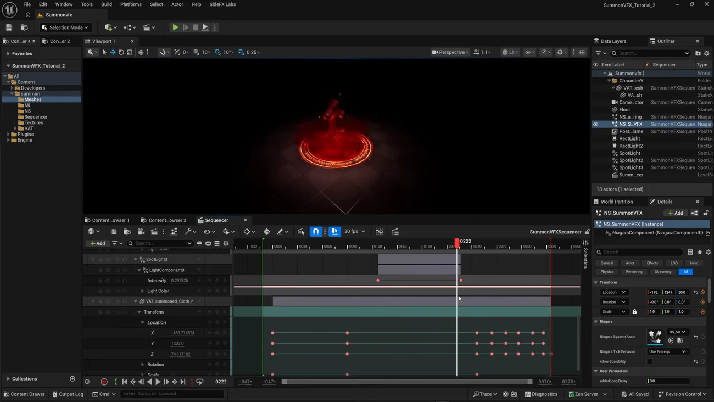

Summon VFX 5 — Sequencer で1カットに仕上げる
出典: Summon VFX | 5 | Configure Sequencer （SideFX 公式チュートリアル Realtime Summon VFX の第5回・最終回 / 講師 Cesar Merchan さん / Unreal Engine 5.7 / 4:10 / 英語）。 このページは、上記の動画を見ながら自分用にまとめた日本語の学習メモです。SideFX 公式の翻訳ではありません。 前回はUnreal でマテリアルと Niagara を組むでした。
この回で扱うこと
- カメラシェイクをブループリントで作る手順。どのクラスから作るかまで
- 画角（FOV）をほんの少しだけ動かして引きを作ること
- Niagara 2つを時間差で起動すること
- ポストプロセスの露出補正をアニメートして、溜めと解放を作ること
- ライトを開くタイミングで上げること
- キャラクターを床下から出すという手作業の割り切り
4分の短い回ですが、「エフェクトは組めたが1カットとして気持ちよくない」を埋める工程です。 やっていることは全部小さな足し算で、それが積み上がって効いています。
1. カメラシェイクを作る
Sequencer にカメラアクターを置き、そこにカメラシェイクを付けます。 カメラシェイクは自分でブループリントを作ります。
- Blueprint Class から Default Camera Shake Base を選びます
- 親クラスが Default Camera Shake Base になっていることを確認します
- シェイクのパターンに Perlin Noise Camera Shake Pattern を設定します
- Location の Amplitude と Frequency に小さい値を入れます
- Duration を
0.4にします
Duration 0.4 秒という短さが大事だと思います。 これはポータルが開く瞬間だけのためのもので、ずっと揺れていては目が疲れます。 「一瞬だけ、ごく小さく」という設計です。
2. FOV を 90 → 96 → 90
ポータルが開くところで、画角を 90 から 96 へ動かして戻します。
6度だけです。動画でも「引き込まれる感じを出すためのごく控えめなもの」と説明されています。 カメラシェイクと合わせて、「開いた」という手応えを作るのがこの2つの役です。
こういう数値はやりすぎると安っぽくなるので、 実際に使われた値（0.4秒、6度）が分かるのは参考になります。
3. Niagara 2つを時間差で起動する
| システム | いつ |
|---|---|
召喚エフェクト（NS_SummonVFX） | 最初から |
| 登場エフェクト | ポータルが開いた後 |
Sequencer に Niagara コンポーネントを置き、ライフサイクルのトラックで実行させます。
前回 Loop Delay で第1部と第2部を1つのシステム内でずらしましたが、 システム同士のタイミングは Sequencer 側で取っています。 「1システム内の段構成は Loop Delay、システム間は Sequencer」という分担です。
4. 露出を落として、戻す
ポストプロセスボリュームの Exposure Compensation をアニメートします。
エネルギーを集めているあいだは露出を下げて、開いたら戻します。 暗くしておいてから明るくすることで、同じ明るさの光がより強く見えます。
エフェクト側を明るくするのではなく画面全体を一度暗くするというのが、 カットとして考えたときの手だと思います。
5. ライトを足す
スポットライトを追加して、ポータルが開くときとキャラクターが出てくるときに強めます。
エフェクトの Emissive だけでは周囲に光が回らないので、 実際のライトで環境を照らしてやる、という補いです。

アウトライナを見ると、最終的なカットの構成要素が全部並んでいます。
| 要素 | 数 |
|---|---|
| Niagara システム | 2 |
| Post Process ボリューム | 1 |
| ライト | 4 |
| VAT のキャラクター | 1 |
| Level Sequence | 1 |
NS_SummonVFX の User Parameter に Loop Delay 3.0 が見えます。
前回説明した「3秒後に第2部」がここで確認できます。
Niagara の中の値を Sequencer 側から見られるので、タイミングの調整はここでもできます。
6. キャラクターは手で動かす
最後にキャラクターです。ここは手作業で割り切っています。
- キャラクターを床の下に置いておきます
- Sequencer で位置をアニメートして、ポータルから出てくるように動かします
理由は明快で、Sequencer の中でプレビューするだけだからです。 ゲーム中のロジックとして作る必要がないので、手で置いたほうが速い。 リアルタイム向けの作業でも「ここは作り込まない」と決めるところがある、という例だと思います。
この回のまとめ
- カメラシェイクは Default Camera Shake Base からブループリントを作り、Perlin Noise Camera Shake Pattern を設定します
- Duration は 0.4 秒。開く瞬間だけのごく短いものです
- FOV は 90 → 96 → 90。6度だけ動かします
- システム内の段構成は Loop Delay、システム間のタイミングは Sequencer という分担です
- Exposure Compensation を下げてから戻すと、同じ光がより強く見えます
- Emissive だけでは周囲が照らされないので、実際のライトを足します
- キャラクターは床下に置いて手でアニメート。プレビュー用なので作り込みません
シリーズを通して
これで全6本が終わりです。振り返ると、 「テクスチャの枚数とサンプリング回数を増やさない」という制約が全部の判断を貫いていたのが印象的でした。
| 制約への答え | 出てきた場所 |
|---|---|
| パックテクスチャ（RGBA に4種類詰める） | 第2回で作り、第4回で Channel Mask Parameter が受けます |
| 頂点カラーにグラデーションを焼く | 第1回で焼き、第4回の不透明度と Lerp で使います |
uv2 で UV セットを2組持たせる | 第1回で仕込み、Unreal で使い分けます |
| 2×2 アトラスと Sub Image Index | 第2回で作り、第4回で火の粉のばらつきになります |
| フリップブックの開始フレームをランダムに | 1枚の 8×8 で違う動きに見せます |
| Scale カーブを −1 にして回転を反転 | 同じ素材で逆回りを作ります |
| 同じエミッタで力だけ差し替え（Point Attraction ↔ Vortex） | 集める動きと散る動きを作り分けます |
どれも「素材を増やさずに見た目の幅を増やす」ための手です。 オフラインレンダリングなら別々に作ってしまうところを、 1つの素材から引き出す方向に寄せているのがこのシリーズの一貫した性格だと思います。
シリーズ全体の構成は第0回のメモにまとめてあります。